A transposition-first manual
for piano,
Ableton Push and
Note,
and guitar
Version 1.3.3 · October 2026
For two readers at once: an absolute beginner who needs music from first principles, and an experienced guitarist/electronic musician who wants piano harmony to become transposable rather than trapped in C major / A minor / D Dorian.
Function → pitch spelling → register → instrument geometry
This is not a general piano method. It has a narrower goal: make scales, chords, arpeggios, voicings, and progressions transposable on a keyboard whose physical geometry changes from key to key. It starts from first principles so a new musician can use it, but everything points back to that goal.
You do not need to read staff notation, have perfect pitch, memorize every key signature, or already know piano fingering. You need a keyboard or piano, a few minutes of focused practice, and the willingness to say note names and interval formulas before speed becomes important.
| Reader | Start here | Main route | Use as reference |
|---|---|---|---|
| Absolute beginner | Preface, then Part I | Parts I-IV, then the beginner program in Part VI | Part VII and Appendices A-E when an exercise asks for them |
| Guitar / Push / Note player | Skim Part I | Parts III-VI, translating every object onto piano | Part VII and the all-key appendices |
Appendix F (negative harmony) is optional. Appendix G documents sources and product-layout details. Neither is required for the main learning path.
The book uses the same four-layer translation throughout:
function → pitch spelling → register → instrument geometry
For example, a minor seventh chord is always:
1 b3 5 b7
On D, that becomes:
D F A C
That spelling still does not tell you which D, F, A, and C.
A concrete voicing might be D3 F3 A3 C4; another might
place the same chord an octave higher. The chord-tone formula is the
same, but the sounding pitches and physical locations are not.
On piano, guitar, Push, or Note, those pitches occupy different physical places. When an exercise feels difficult, move backward through the chain: say the formula, spell the pitch classes, choose the register, then find those exact pitches on the instrument.
Roman numerals describe chords by scale degree in a
key (harmonic context), whereas 1 b3 5 b7
describes the interval structure of one chord relative to its root.
Uppercase normally means major; lowercase means minor. Thus
ii-V-I in C major means Dm-G-C. A flat or
sharp before a Roman numeral alters that chord root relative to the
reference scale: bVI means a chord rooted on the lowered
sixth degree.
# = sharp (one
semitone higher); b = flat (one semitone lower);
m = minor; maj = major; dim or
° = diminished. Double accidentals count twice:
Bbb sounds on the A key and C## on the D key.
Finger numbers run from 1 (thumb) to 5 (little
finger).
C D E F G slowly and say the letter names.C E G and say 1 3 5: this is a C
major triad.C Eb G and say 1 b3 5: this is a C
minor triad.D F# A and
D F A. Do not copy the C hand shape; rebuild the
formulas.That last step is the entire book in miniature: the musical object stays invariant while the piano geometry changes.
| Term | Meaning |
|---|---|
| Pitch | How high or low a sound is. |
| Note | A named pitch, such as C, F#, or Bb. |
| Semitone | The smallest step on a piano; one adjacent key. |
| Octave | Twelve semitones; the same note name at a higher or lower register. |
| Key | A tonal center plus the pitch relationships organized around it. |
| Tonic | Scale degree 1: the tonal home of a key or mode. |
| Root | The note that names and organizes a chord. |
| Interval | The distance between two pitches. |
| Scale degree | A note’s numbered function inside a scale: 1, 2, 3, etc. |
| Scale | An ordered collection of pitches around a tonic. |
| Mode | A scale pattern understood through a particular tonic and interval structure. |
| Chromatic | Using all twelve semitone positions rather than only one scale. |
| Diatonic | Belonging to the notes/chords generated by a seven-note key or mode. |
| Enharmonic | Different spellings for the same piano key, such as C# and Db. |
| Chord | Several pitches heard as one harmonic object. |
| Triad | A three-note chord built from root, third, and fifth. |
| Inversion | A chord reordered so a note other than the root is lowest. |
| Voicing | The particular register, spacing, and ordering of chord tones. |
| Arpeggio | A chord played as successive notes rather than simultaneously. |
| Transposition | Moving a musical structure to a new pitch level while preserving its relationships. |
| Voice leading | How individual notes move from one chord to the next. |
| Isomorphic | A layout where a given interval keeps the same physical shape after transposition. |
| Register | The region of pitch space in which notes sound. |
| Scientific pitch notation | The octave-number convention used in this book: middle C is C4, and the octave number changes at C. Some software labels the same pitches with different octave numbers. |
On a modern piano, an octave is divided into 12 equal semitone steps (12-tone equal temperament). After 12 semitones, note names repeat at double the frequency.
The chromatic cycle is:
C - C#/Db - D - D#/Eb - E - F - F#/Gb - G - G#/Ab - A - A#/Bb - B - C
A piano makes this cycle visually uneven: seven white-note names and five black keys. A guitar makes it nearly uniform: every fret is one semitone. Push in Chromatic mode can also make semitone relationships geometrically regular.
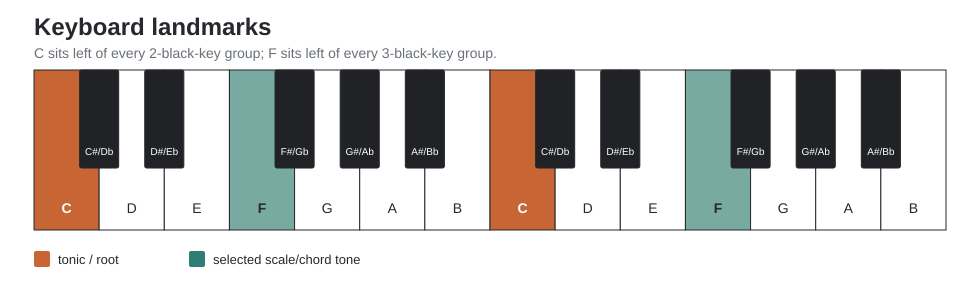
Success criterion: you can identify C and F anywhere on the keyboard without counting; work towards two seconds without sacrificing accuracy.
An interval can be understood as a semitone distance and as a scale-degree function.
| Interval | Semitones | Degree shorthand | From C |
|---|---|---|---|
| Unison | 0 | 1 | C |
| Minor 2nd | 1 | b2 | Db |
| Major 2nd | 2 | 2 | D |
| Minor 3rd | 3 | b3 | Eb |
| Major 3rd | 4 | 3 | E |
| Perfect 4th | 5 | 4 | F |
| Tritone | 6 | b5 / #4 | Gb / F# |
| Perfect 5th | 7 | 5 | G |
| Minor 6th | 8 | b6 | Ab |
| Major 6th | 9 | 6 | A |
| Minor 7th | 10 | b7 | Bb |
| Major 7th | 11 | 7 | B |
| Octave | 12 | 8 / 1 | C |
Pick a random tonic. Say the formula first, then find the note.
1 → 51 → b31 → 31 → b71 → 7Do not slide a remembered shape. Recompute the interval from the tonic until the answer becomes automatic.
The piano is asymmetric, but asymmetry gives touch landmarks. White-only C major is visually simple but tactilely featureless. Keys such as B, Db, and Gb distribute the longer fingers onto black keys and can feel surprisingly natural.
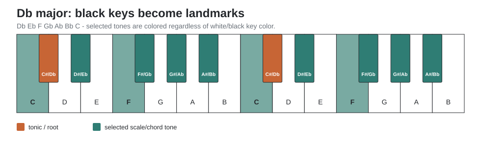
Play Db major slowly, one octave:
Db Eb F Gb Ab Bb C Db
Say degrees while playing:
1 2 3 4 5 6 7 1
Then play B major:
B C# D# E F# G# A# B
On piano, the same interval formula produces different visible shapes in different keys. Compare:
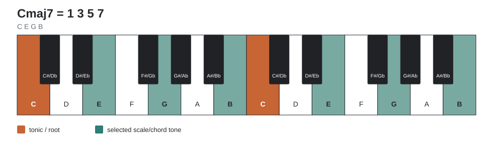
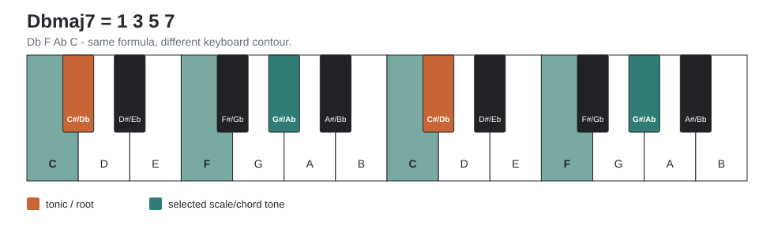
Both use 1 3 5 7. The chord formula is unchanged; the
sounding pitches and keyboard geometry are not.
For this manual, Push is always treated in Chromatic mode, never in an In-Key layout. Use the fourths layout unless an exercise explicitly says otherwise. In the common 12-tone chromatic fourths geometry, moving one pad to the right is one semitone and moving one pad upward is five semitones (a perfect fourth). A key/scale selection may still be useful for lighting scale tones, but pitches outside the scale remain physically present. With Fixed ON, the same pad keeps its pitch when you change the selected key; use this setting when only changing the scale highlighting. With Fixed OFF, the grid shifts so the bottom-left pad follows the selected root; the same relative fingering then produces different pitches.
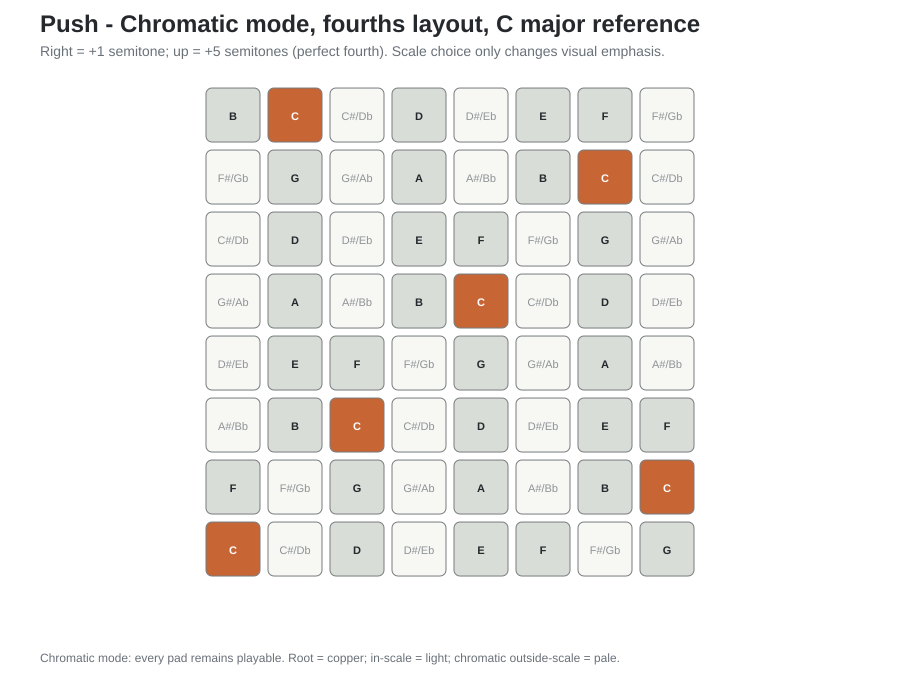
With Fixed ON, change the reference scale to F# Dorian while remaining in Chromatic mode: the played pitches stay in place and the highlighted scale tones change. To transpose a shape by changing the selected root instead, switch Fixed OFF. The fourths layout retains its interval geometry in either case.
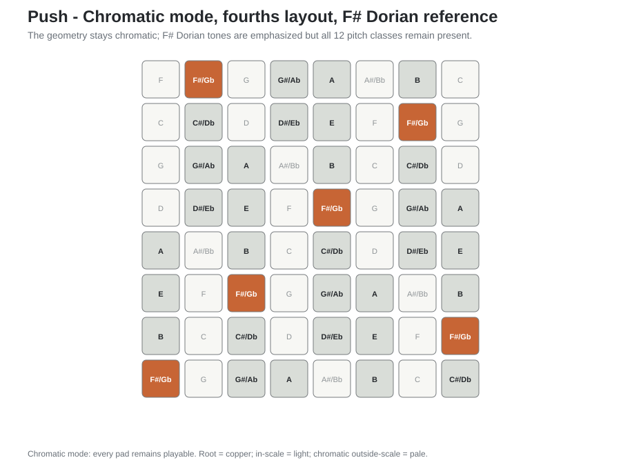
This makes Push a useful comparison instrument: it preserves a regular interval geometry, while piano forces the same interval formula into a varying white/black-key contour.
Ableton Note’s melodic pads can use Fourths or Sequential layouts. In this manual, keep In Key OFF so all twelve chromatic pitches remain playable. For direct comparison with guitar and Push, use Fourths: the pad directly above another is five semitones higher.
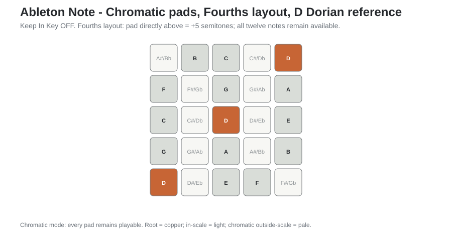
Use Note as a translation trainer: play an object on the chromatic pads, name its degree formula, then reproduce it on piano. The scale setting can act as a visual annotation, but it must not remove the chromatic notes you are trying to learn.
In standard tuning, every fret is a semitone. Most interval/chord shapes transpose by sliding, with one important irregularity: the interval between G and B strings is a major third rather than a perfect fourth.
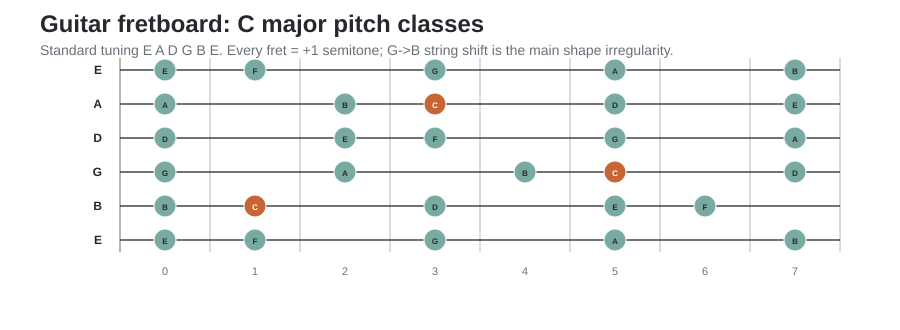
The piano problem is therefore the reverse of a barre chord: the formula transposes, but the shape does not.
Movable geometry is useful, but it creates a specific blind spot. On guitar, a scale or chord can often be transposed by moving a familiar shape up or down the neck. The fingering relationship survives, but every sounding pitch has moved with it. A player can therefore know how to move the object without knowing which notes are sounding, or where the same pitch classes live in another register. Push and Note can encourage the same habit because their chromatic layouts are largely isomorphic.
Piano exposes the problem differently. Several keys can be practised in the same register: C major around middle C, Db major beginning a semitone higher, D major another semitone higher. The hand geometry changes, but the keyboard remains a fixed map of absolute pitches. This makes it easier to notice that transposition and relocation are not the same operation.
The book therefore treats shape as a consequence, not as the musical object. A shape is allowed to become automatic only after you can recover what it means: function, note names, register, and exact locations.
Choose the register from C3 through C5. Play these major scales without leaving it:
On piano, name every note as you play it. On guitar or Push/Note, resist the urge to preserve one movable shape: choose positions that keep the pitches inside the same register window. Then reverse the exercise: keep a familiar shape and state explicitly how far the entire sounding register moved.
Success criterion: you can distinguish transposing the musical relationship from moving a physical shape, and you can name the exact pitches produced by either operation.
Major scale step pattern:
W W H W W W H
Degree formula:
1 2 3 4 5 6 7
A key is not a hand shape. It is a tonic plus an ordered pitch collection.
| Major key | Notes | Relative minor |
|---|---|---|
| C | C D E F G A B | Am |
| Db | Db Eb F Gb Ab Bb C | Bbm |
| D | D E F# G A B C# | Bm |
| Eb | Eb F G Ab Bb C D | Cm |
| E | E F# G# A B C# D# | C#m |
| F | F G A Bb C D E | Dm |
| F# | F# G# A# B C# D# E# | D#m |
| G | G A B C D E F# | Em |
| Ab | Ab Bb C Db Eb F G | Fm |
| A | A B C# D E F# G# | F#m |
| Bb | Bb C D Eb F G A | Gm |
| B | B C# D# E F# G# A# | G#m |
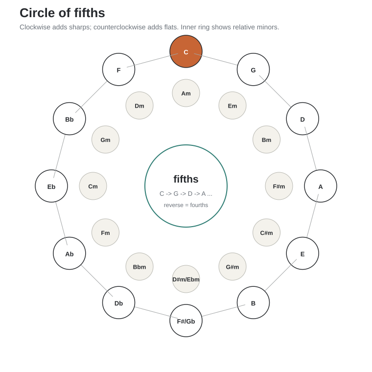
The circle is more than a key-signature mnemonic. Adjacent keys differ by only one scale pitch, so moving around it is a controlled way to acquire keyboard topography. Clockwise motion is a chain of ascending fifths; reading the same ring counterclockwise gives descending fifths / ascending fourths, which is why it also models much functional root motion.
Learn major keys in this order:
C → G → D → A → E → B → Gb/F# → Db → Ab → Eb → Bb → F
For each key:
1 2 3 4 5 6 7 1 while playing.1-3-5, then 1-3-5-7.Do not add speed until the note names are reliable.
The modes are not seven unrelated scales. They are seven rotations / alterations of a diatonic collection, best understood as degree formulas relative to a new tonic.
| Mode | Formula | Characteristic degree |
|---|---|---|
| Ionian | 1 2 3 4 5 6 7 |
major 7 |
| Dorian | 1 2 b3 4 5 6 b7 |
natural 6 over minor |
| Phrygian | 1 b2 b3 4 5 b6 b7 |
b2 |
| Lydian | 1 2 3 #4 5 6 7 |
#4 |
| Mixolydian | 1 2 3 4 5 6 b7 |
b7 over major |
| Aeolian | 1 2 b3 4 5 b6 b7 |
b6 |
| Locrian | 1 b2 b3 4 b5 b6 b7 |
b5 |
If C major, A minor, and D Dorian are your default universe, they all use the same pitch collection. Deliberately practice modes whose tonic forces black keys:
Eb F Gb Ab Bb C DbF# G# A B C# D# EDb Eb F G Ab Bb CAb Bb C Db Eb F GbFor each, alternate between:
scale → triad → seventh chord → arpeggio → 2-bar improvisation
For an aural check, sustain a D-minor chord or D pedal. Compare D
Aeolian (D E F G A Bb C) with D Dorian
(D E F G A B C) using the same short melody, changing only
Bb to B. Keep D as the tonic; then transpose this comparison to E, where
the contrasting sixths are C and C#. The test is whether you can hear,
name and play that one changed degree without changing the tonal
centre.
Harmonic minor introduces a leading tone into natural minor. Melodic minor (jazz usage) raises 6 and 7. Pentatonic and blues scales simplify the pitch set for melodic practice. Whole tone removes semitone hierarchy and produces symmetrical augmented harmony.
| Scale | Formula | Typical use |
|---|---|---|
| Harmonic minor | 1 2 b3 4 5 b6 7 |
minor-key dominant function |
| Melodic minor | 1 2 b3 4 5 6 7 |
jazz minor, altered modal harmony |
| Major pentatonic | 1 2 3 5 6 |
consonant melody |
| Minor pentatonic | 1 b3 4 5 b7 |
rock, blues, modal melody |
| Minor blues | 1 b3 4 b5 5 b7 |
blues vocabulary |
| Whole tone | 1 2 3 #4 #5 b7 |
symmetrical / augmented sound |
Read a chord symbol from left to right: root letter → chord
quality → extensions or alterations. For example,
Abmaj9 means an Ab-root chord with major quality, a major
seventh, and a ninth.
In a diatonic key, reorder the seven scale degrees as:
1 → 3 → 5 → 7 → 2 → 4 → 6 → 1
In C major this is C → E → G → B → D → F → A → C. Three
adjacent positions give a triad; four give a seventh chord. Unlike the
circle of fifths, this diatonic circle of thirds depends on the
key because the sequence uses scale notes rather than a fixed
chromatic interval.
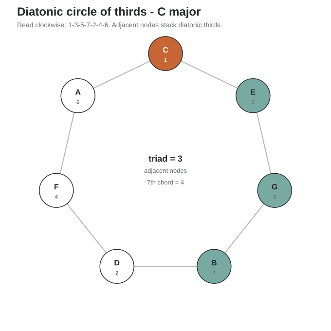
There are also chromatic cycles made from a constant major or minor third. They are symmetrical subsets of the 12-note system: major thirds close after three steps, minor thirds after four. These cycles explain augmented and diminished symmetry and are useful when you later explore chromatic harmony.
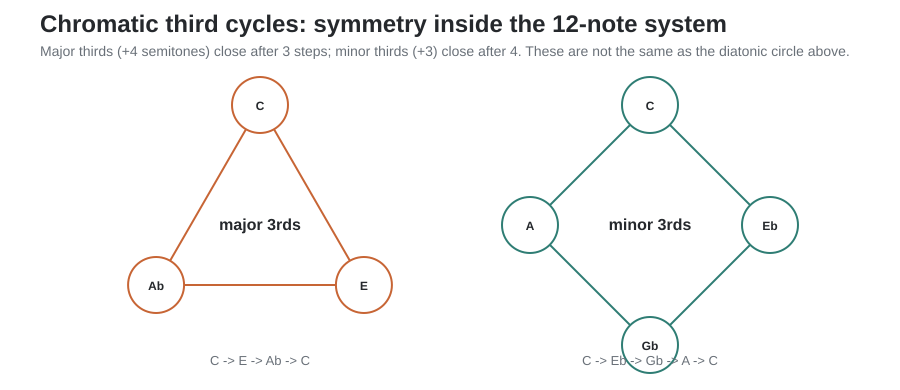
| Chord | Formula | C example |
|---|---|---|
| Major | 1 3 5 |
C E G |
| Minor | 1 b3 5 |
C Eb G |
| Diminished | 1 b3 b5 |
C Eb Gb |
| Augmented | 1 3 #5 |
C E G# |
| sus2 | 1 2 5 |
C D G |
| sus4 | 1 4 5 |
C F G |
| Chord | Formula | C example |
|---|---|---|
| maj7 | 1 3 5 7 |
C E G B |
| 7 | 1 3 5 b7 |
C E G Bb |
| m7 | 1 b3 5 b7 |
C Eb G Bb |
| m(maj7) | 1 b3 5 7 |
C Eb G B |
| m7b5 | 1 b3 b5 b7 |
C Eb Gb Bb |
| dim7 | 1 b3 b5 bb7 |
C Eb Gb Bbb |
A chord inversion changes which chord tone is in the bass without changing chord identity.
For Cmaj7:
C E G B = 1 3 5 7E G B C = 3 5 7 1G B C E = 5 7 1 3B C E G = 7 1 3 5Take m7 = 1 b3 5 b7.
A voicing is a choice of register, doubling,
omission, and spacing for a chord. This is where pitch-class knowledge
becomes exact pitch knowledge: C E G B names chord tones;
C3 E3 G3 B3 names one concrete realization.
Keep chord tones within one octave. Best for learning spelling and inversions.
Cmaj7: C E G B
Move one or more inner tones by an octave.
Cmaj7: C G B E
This creates more air and reduces midrange congestion.
For jazz/pop accompaniment, the 3rd and 7th carry much of the harmonic identity.
C E B or C B EC E BbC Eb BbWhen bass supplies the root, omit it and voice color tones.
For a ii-V-I in C:
F A C E = b3 5 b7 9F A B E = b7 9 3 13E G B D = 3 5 7 9The important feature is voice leading: individual notes move by small intervals.
Stack fourths rather than thirds. In D Dorian, a simple voicing is:
D G C F = 1 4 b7 b3
Quartal harmony is especially natural on guitar and fourths-based pad layouts.
Take a four-note close voicing, number voices from the top, and move the second-highest voice down an octave. This produces a wider four-note texture common in arranging and guitar voicings.
Example Cmaj7 close: C E G B. From the top: B(1), G(2),
E(3), C(4). Drop G down an octave: G C E B.
Extensions continue tertian stacking beyond the seventh:
Chord symbols usually imply selective voicing, not every possible chord tone.
| Chord | Useful formula | C example |
|---|---|---|
| maj9 | 1 3 5 7 9 |
C E G B D |
| 9 | 1 3 5 b7 9 |
C E G Bb D |
| m9 | 1 b3 5 b7 9 |
C Eb G Bb D |
| 6 | 1 3 5 6 |
C E G A |
| m6 | 1 b3 5 6 |
C Eb G A |
| 7sus4 | 1 4 5 b7 |
C F G Bb |
For practical keyboard voicing, the 5th is often omitted before the 3rd or 7th.
Do not learn arpeggios as an unrelated technique. Use the chord vocabulary you are already learning.
For each root, play:
maj7: 1 3 5 7 1 7 5 3 1m7: 1 b3 5 b7 1 b7 5 b3 17: 1 3 5 b7 1 b7 5 3 1m7b5: 1 b3 b5 b7 1 b7 b5 b3 1Start with one octave. Then use two octaves and choose fingerings that minimize twisting. At speed, consult conventional piano fingering and keep thumbs mostly on white keys where practical.
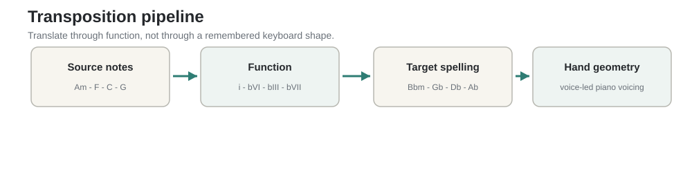
When transposing, do not translate hand shape to hand shape. Translate through function and then make register explicit:
source notes → degree formula → target pitch classes → register → target geometry
Example:
Am - F - C - G
In A minor this is:
i - bVI - bIII - bVII
Move the function to Bb minor:
Bbm - Gb - Db - Ab
The formula survives unchanged. In a concrete piano voicing, choose the following source pitches and transpose each sounding pitch up one semitone. The chord labels and Roman numerals alone do not specify the voicing.
| Original chord | Source voicing | Target chord | Target voicing |
|---|---|---|---|
| Am | A3 C4 E4 |
Bbm | Bb3 Db4 F4 |
| F | A3 C4 F4 |
Gb | Bb3 Db4 Gb4 |
| C | G3 C4 E4 |
Db | Ab3 Db4 F4 |
| G | G3 B3 D4 |
Ab | Ab3 C4 Eb4 |
These are deliberately close voicings, not four successive
root-position triads. The F and C chords use inversions; the transposed
versions retain the corresponding bass notes and the entire contour. On
piano, locate each target pitch by its name and octave, not by copying
the earlier fingering. For example, E4 → F4 crosses
adjacent white keys while C4 → Db4 moves to a black key.
Keep the given registers when you practise the example.
Check: Return to A minor and transpose the four voiced chords down one semitone to Ab minor. Write the twelve sounding target pitches (including octaves) before playing; then verify them on piano. This is a literal note-for-note transposition, not merely a substitution of chord symbols.
Pick one progression and cycle through roots chromatically. Do not use a transpose button on the piano.
Suggested first progression:
i - bVI - bIII - bVII
Then:
I - V - vi - IVii - V - II - vi - IV - Vi - iv - V7 - iThe ii-V-I progression means a minor chord on scale
degree 2, a dominant-function chord on degree 5, and the tonic chord on
degree 1. It is a compact laboratory for functional harmony and
economical piano movement.
In C major:
Dm7 → G7 → Cmaj7
Try close positions first, then minimize movement. Track each voice independently. The goal is not identical shapes but small voice-leading distances.
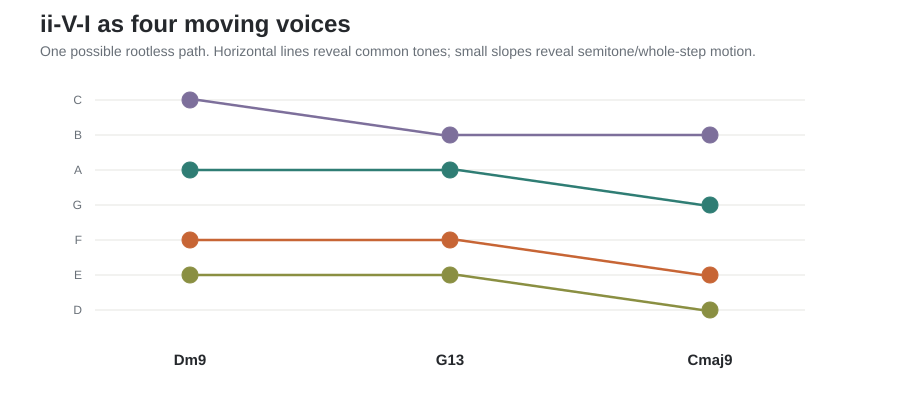
The graph is not a required voicing; it is a way to see why a good voicing feels economical. Repeated horizontal levels are common tones; shallow slopes are small interval moves.
Use the isomorphic controller as the abstract reference and piano as the concrete realization.
Example:
1 b3 5 b7 → D F A CF# A C# EFor these four chord tones, a simple piano check is
D3 F3 A3 C4 → F#3 A3 C#4 E4. Here the chosen
voicing stays ordered in thirds while its absolute positions change. Do
not interpret Note’s scale-highlight setting as pitch transposition.
A guitar position is not a key. The same pitch class appears at several string/fret locations, and a movable shape normally changes register as it moves. The aim is not to stop using shapes, but to be able to enter and leave them deliberately.
Take a movable guitar chord shape you know well.
This converts geometric guitar intuition into harmonic-function and pitch-location intuition rather than discarding it.
| Time | Task | Rule |
|---|---|---|
| 5 min | One scale/mode in selected roots | Say degrees and note names |
| 5 min | One chord quality in selected roots | Root position, then inversions |
| 5 min | Arpeggiate the same chord | Slow, even, relaxed |
| 5 min | One short progression in selected roots | Functional analysis first |
Choose the workload by accuracy: begin with three roots per block; use six once you can name and play each without correction; twelve is an advanced benchmark rather than the default. Five minutes divided by twelve allows only 25 seconds per root. Repeat a troublesome key next session instead of racing through it. Start in Db, Eb, F# or Ab at least half the time, and only add tempo after three error-free repetitions.
1 3 5 and 1 b3 5 from each
tonic.Every practice item begins on Db, F#, Ab, or B. Major, Dorian, m7, maj7, dominant 7. Keep at least half of the work inside one fixed two-octave register window so transposition cannot be reduced to sliding a shape.
One chord formula per day through all 12 roots; all inversions.
Dorian, Mixolydian, Lydian, Aeolian through all 12 roots. Improvise two bars per root.
All 12 major keys. First root-position spellings, then economical inversions, then shells/rootless voicings.
Natural/harmonic/melodic minor. i-iv-V7-i in all 12
roots. Hear the leading tone created by harmonic minor.
Push/Note → degree formula → pitch names + register → piano. Guitar → degree formula → pitch names + register → piano. No direct visual copying.
Close, spread, shells, rootless guide tones, quartal, drop-2. Transpose one voicing family through all roots.
Choose your own material that normally lands in A minor / D Dorian / C major. Force it into Db, E, F#, Ab, and Bb before returning to its original key.
Use a metronome only after note selection is correct.
Memorize:
Derive initially, then allow motor memory to take over:
Do not memorize twelve unrelated pictures if one formula explains them.
| Key | Sharps/flats | Relative minor |
|---|---|---|
| C | none | Am |
| G | F# | Em |
| D | F#, C# | Bm |
| A | F#, C#, G# | F#m |
| E | F#, C#, G#, D# | C#m |
| B | F#, C#, G#, D#, A# | G#m |
| Gb | Bb, Eb, Ab, Db, Gb, Cb | Ebm |
| Db | Bb, Eb, Ab, Db, Gb | Bbm |
| Ab | Bb, Eb, Ab, Db | Fm |
| Eb | Bb, Eb, Ab | Cm |
| Bb | Bb, Eb | Gm |
| F | Bb | Dm |
Diatonic circle of thirds:
1-3-5-7-2-4-6. Use it to spell tertian chords inside any
key. A triad is three adjacent entries; a seventh chord is four.
Chromatic major-third cycles: +4 semitones; three
notes per cycle. Example: C-E-Ab-C.
Chromatic minor-third cycles: +3 semitones; four
notes per cycle. Example: C-Eb-Gb-A-C.
For a major key:
Imaj7 - iim7 - iiim7 - IVmaj7 - V7 - vim7 - viim7b5
This pattern transposes intact to every major key.
For recognizing harmony quickly:
Given Abmaj9:
1 3 5 7 9.Ab C Eb G Bb.| Root | Degree formula | Notes |
|---|---|---|
| C | 1 2 3 4 5 6 7 | C D E F G A B |
| Db | 1 2 3 4 5 6 7 | Db Eb F Gb Ab Bb C |
| D | 1 2 3 4 5 6 7 | D E F# G A B C# |
| Eb | 1 2 3 4 5 6 7 | Eb F G Ab Bb C D |
| E | 1 2 3 4 5 6 7 | E F# G# A B C# D# |
| F | 1 2 3 4 5 6 7 | F G A Bb C D E |
| F# | 1 2 3 4 5 6 7 | F# G# A# B C# D# E# |
| G | 1 2 3 4 5 6 7 | G A B C D E F# |
| Ab | 1 2 3 4 5 6 7 | Ab Bb C Db Eb F G |
| A | 1 2 3 4 5 6 7 | A B C# D E F# G# |
| Bb | 1 2 3 4 5 6 7 | Bb C D Eb F G A |
| B | 1 2 3 4 5 6 7 | B C# D# E F# G# A# |
| Root | Degree formula | Notes |
|---|---|---|
| C | 1 2 b3 4 5 6 b7 | C D Eb F G A Bb |
| Db | 1 2 b3 4 5 6 b7 | Db Eb Fb Gb Ab Bb Cb |
| D | 1 2 b3 4 5 6 b7 | D E F G A B C |
| Eb | 1 2 b3 4 5 6 b7 | Eb F Gb Ab Bb C Db |
| E | 1 2 b3 4 5 6 b7 | E F# G A B C# D |
| F | 1 2 b3 4 5 6 b7 | F G Ab Bb C D Eb |
| F# | 1 2 b3 4 5 6 b7 | F# G# A B C# D# E |
| G | 1 2 b3 4 5 6 b7 | G A Bb C D E F |
| Ab | 1 2 b3 4 5 6 b7 | Ab Bb Cb Db Eb F Gb |
| A | 1 2 b3 4 5 6 b7 | A B C D E F# G |
| Bb | 1 2 b3 4 5 6 b7 | Bb C Db Eb F G Ab |
| B | 1 2 b3 4 5 6 b7 | B C# D E F# G# A |
| Root | Degree formula | Notes |
|---|---|---|
| C | 1 b2 b3 4 5 b6 b7 | C Db Eb F G Ab Bb |
| Db | 1 b2 b3 4 5 b6 b7 | Db Ebb Fb Gb Ab Bbb Cb |
| D | 1 b2 b3 4 5 b6 b7 | D Eb F G A Bb C |
| Eb | 1 b2 b3 4 5 b6 b7 | Eb Fb Gb Ab Bb Cb Db |
| E | 1 b2 b3 4 5 b6 b7 | E F G A B C D |
| F | 1 b2 b3 4 5 b6 b7 | F Gb Ab Bb C Db Eb |
| F# | 1 b2 b3 4 5 b6 b7 | F# G A B C# D E |
| G | 1 b2 b3 4 5 b6 b7 | G Ab Bb C D Eb F |
| Ab | 1 b2 b3 4 5 b6 b7 | Ab Bbb Cb Db Eb Fb Gb |
| A | 1 b2 b3 4 5 b6 b7 | A Bb C D E F G |
| Bb | 1 b2 b3 4 5 b6 b7 | Bb Cb Db Eb F Gb Ab |
| B | 1 b2 b3 4 5 b6 b7 | B C D E F# G A |
| Root | Degree formula | Notes |
|---|---|---|
| C | 1 2 3 #4 5 6 7 | C D E F# G A B |
| Db | 1 2 3 #4 5 6 7 | Db Eb F G Ab Bb C |
| D | 1 2 3 #4 5 6 7 | D E F# G# A B C# |
| Eb | 1 2 3 #4 5 6 7 | Eb F G A Bb C D |
| E | 1 2 3 #4 5 6 7 | E F# G# A# B C# D# |
| F | 1 2 3 #4 5 6 7 | F G A B C D E |
| F# | 1 2 3 #4 5 6 7 | F# G# A# B# C# D# E# |
| G | 1 2 3 #4 5 6 7 | G A B C# D E F# |
| Ab | 1 2 3 #4 5 6 7 | Ab Bb C D Eb F G |
| A | 1 2 3 #4 5 6 7 | A B C# D# E F# G# |
| Bb | 1 2 3 #4 5 6 7 | Bb C D E F G A |
| B | 1 2 3 #4 5 6 7 | B C# D# E# F# G# A# |
| Root | Degree formula | Notes |
|---|---|---|
| C | 1 2 3 4 5 6 b7 | C D E F G A Bb |
| Db | 1 2 3 4 5 6 b7 | Db Eb F Gb Ab Bb Cb |
| D | 1 2 3 4 5 6 b7 | D E F# G A B C |
| Eb | 1 2 3 4 5 6 b7 | Eb F G Ab Bb C Db |
| E | 1 2 3 4 5 6 b7 | E F# G# A B C# D |
| F | 1 2 3 4 5 6 b7 | F G A Bb C D Eb |
| F# | 1 2 3 4 5 6 b7 | F# G# A# B C# D# E |
| G | 1 2 3 4 5 6 b7 | G A B C D E F |
| Ab | 1 2 3 4 5 6 b7 | Ab Bb C Db Eb F Gb |
| A | 1 2 3 4 5 6 b7 | A B C# D E F# G |
| Bb | 1 2 3 4 5 6 b7 | Bb C D Eb F G Ab |
| B | 1 2 3 4 5 6 b7 | B C# D# E F# G# A |
| Root | Degree formula | Notes |
|---|---|---|
| C | 1 2 b3 4 5 b6 b7 | C D Eb F G Ab Bb |
| Db | 1 2 b3 4 5 b6 b7 | Db Eb Fb Gb Ab Bbb Cb |
| D | 1 2 b3 4 5 b6 b7 | D E F G A Bb C |
| Eb | 1 2 b3 4 5 b6 b7 | Eb F Gb Ab Bb Cb Db |
| E | 1 2 b3 4 5 b6 b7 | E F# G A B C D |
| F | 1 2 b3 4 5 b6 b7 | F G Ab Bb C Db Eb |
| F# | 1 2 b3 4 5 b6 b7 | F# G# A B C# D E |
| G | 1 2 b3 4 5 b6 b7 | G A Bb C D Eb F |
| Ab | 1 2 b3 4 5 b6 b7 | Ab Bb Cb Db Eb Fb Gb |
| A | 1 2 b3 4 5 b6 b7 | A B C D E F G |
| Bb | 1 2 b3 4 5 b6 b7 | Bb C Db Eb F Gb Ab |
| B | 1 2 b3 4 5 b6 b7 | B C# D E F# G A |
| Root | Degree formula | Notes |
|---|---|---|
| C | 1 b2 b3 4 b5 b6 b7 | C Db Eb F Gb Ab Bb |
| Db | 1 b2 b3 4 b5 b6 b7 | Db Ebb Fb Gb Abb Bbb Cb |
| D | 1 b2 b3 4 b5 b6 b7 | D Eb F G Ab Bb C |
| Eb | 1 b2 b3 4 b5 b6 b7 | Eb Fb Gb Ab Bbb Cb Db |
| E | 1 b2 b3 4 b5 b6 b7 | E F G A Bb C D |
| F | 1 b2 b3 4 b5 b6 b7 | F Gb Ab Bb Cb Db Eb |
| F# | 1 b2 b3 4 b5 b6 b7 | F# G A B C D E |
| G | 1 b2 b3 4 b5 b6 b7 | G Ab Bb C Db Eb F |
| Ab | 1 b2 b3 4 b5 b6 b7 | Ab Bbb Cb Db Ebb Fb Gb |
| A | 1 b2 b3 4 b5 b6 b7 | A Bb C D Eb F G |
| Bb | 1 b2 b3 4 b5 b6 b7 | Bb Cb Db Eb Fb Gb Ab |
| B | 1 b2 b3 4 b5 b6 b7 | B C D E F G A |
| Root | Degree formula | Notes |
|---|---|---|
| C | 1 2 3 4 5 6 7 | C D E F G A B |
| Db | 1 2 3 4 5 6 7 | Db Eb F Gb Ab Bb C |
| D | 1 2 3 4 5 6 7 | D E F# G A B C# |
| Eb | 1 2 3 4 5 6 7 | Eb F G Ab Bb C D |
| E | 1 2 3 4 5 6 7 | E F# G# A B C# D# |
| F | 1 2 3 4 5 6 7 | F G A Bb C D E |
| F# | 1 2 3 4 5 6 7 | F# G# A# B C# D# E# |
| G | 1 2 3 4 5 6 7 | G A B C D E F# |
| Ab | 1 2 3 4 5 6 7 | Ab Bb C Db Eb F G |
| A | 1 2 3 4 5 6 7 | A B C# D E F# G# |
| Bb | 1 2 3 4 5 6 7 | Bb C D Eb F G A |
| B | 1 2 3 4 5 6 7 | B C# D# E F# G# A# |
| Root | Degree formula | Notes |
|---|---|---|
| C | 1 2 b3 4 5 b6 b7 | C D Eb F G Ab Bb |
| Db | 1 2 b3 4 5 b6 b7 | Db Eb Fb Gb Ab Bbb Cb |
| D | 1 2 b3 4 5 b6 b7 | D E F G A Bb C |
| Eb | 1 2 b3 4 5 b6 b7 | Eb F Gb Ab Bb Cb Db |
| E | 1 2 b3 4 5 b6 b7 | E F# G A B C D |
| F | 1 2 b3 4 5 b6 b7 | F G Ab Bb C Db Eb |
| F# | 1 2 b3 4 5 b6 b7 | F# G# A B C# D E |
| G | 1 2 b3 4 5 b6 b7 | G A Bb C D Eb F |
| Ab | 1 2 b3 4 5 b6 b7 | Ab Bb Cb Db Eb Fb Gb |
| A | 1 2 b3 4 5 b6 b7 | A B C D E F G |
| Bb | 1 2 b3 4 5 b6 b7 | Bb C Db Eb F Gb Ab |
| B | 1 2 b3 4 5 b6 b7 | B C# D E F# G A |
| Root | Degree formula | Notes |
|---|---|---|
| C | 1 2 b3 4 5 b6 7 | C D Eb F G Ab B |
| Db | 1 2 b3 4 5 b6 7 | Db Eb Fb Gb Ab Bbb C |
| D | 1 2 b3 4 5 b6 7 | D E F G A Bb C# |
| Eb | 1 2 b3 4 5 b6 7 | Eb F Gb Ab Bb Cb D |
| E | 1 2 b3 4 5 b6 7 | E F# G A B C D# |
| F | 1 2 b3 4 5 b6 7 | F G Ab Bb C Db E |
| F# | 1 2 b3 4 5 b6 7 | F# G# A B C# D E# |
| G | 1 2 b3 4 5 b6 7 | G A Bb C D Eb F# |
| Ab | 1 2 b3 4 5 b6 7 | Ab Bb Cb Db Eb Fb G |
| A | 1 2 b3 4 5 b6 7 | A B C D E F G# |
| Bb | 1 2 b3 4 5 b6 7 | Bb C Db Eb F Gb A |
| B | 1 2 b3 4 5 b6 7 | B C# D E F# G A# |
| Root | Degree formula | Notes |
|---|---|---|
| C | 1 2 b3 4 5 6 7 | C D Eb F G A B |
| Db | 1 2 b3 4 5 6 7 | Db Eb Fb Gb Ab Bb C |
| D | 1 2 b3 4 5 6 7 | D E F G A B C# |
| Eb | 1 2 b3 4 5 6 7 | Eb F Gb Ab Bb C D |
| E | 1 2 b3 4 5 6 7 | E F# G A B C# D# |
| F | 1 2 b3 4 5 6 7 | F G Ab Bb C D E |
| F# | 1 2 b3 4 5 6 7 | F# G# A B C# D# E# |
| G | 1 2 b3 4 5 6 7 | G A Bb C D E F# |
| Ab | 1 2 b3 4 5 6 7 | Ab Bb Cb Db Eb F G |
| A | 1 2 b3 4 5 6 7 | A B C D E F# G# |
| Bb | 1 2 b3 4 5 6 7 | Bb C Db Eb F G A |
| B | 1 2 b3 4 5 6 7 | B C# D E F# G# A# |
| Root | Degree formula | Notes |
|---|---|---|
| C | 1 2 3 5 6 | C D E G A |
| Db | 1 2 3 5 6 | Db Eb F Ab Bb |
| D | 1 2 3 5 6 | D E F# A B |
| Eb | 1 2 3 5 6 | Eb F G Bb C |
| E | 1 2 3 5 6 | E F# G# B C# |
| F | 1 2 3 5 6 | F G A C D |
| F# | 1 2 3 5 6 | F# G# A# C# D# |
| G | 1 2 3 5 6 | G A B D E |
| Ab | 1 2 3 5 6 | Ab Bb C Eb F |
| A | 1 2 3 5 6 | A B C# E F# |
| Bb | 1 2 3 5 6 | Bb C D F G |
| B | 1 2 3 5 6 | B C# D# F# G# |
| Root | Degree formula | Notes |
|---|---|---|
| C | 1 b3 4 5 b7 | C Eb F G Bb |
| Db | 1 b3 4 5 b7 | Db Fb Gb Ab Cb |
| D | 1 b3 4 5 b7 | D F G A C |
| Eb | 1 b3 4 5 b7 | Eb Gb Ab Bb Db |
| E | 1 b3 4 5 b7 | E G A B D |
| F | 1 b3 4 5 b7 | F Ab Bb C Eb |
| F# | 1 b3 4 5 b7 | F# A B C# E |
| G | 1 b3 4 5 b7 | G Bb C D F |
| Ab | 1 b3 4 5 b7 | Ab Cb Db Eb Gb |
| A | 1 b3 4 5 b7 | A C D E G |
| Bb | 1 b3 4 5 b7 | Bb Db Eb F Ab |
| B | 1 b3 4 5 b7 | B D E F# A |
| Root | Degree formula | Notes |
|---|---|---|
| C | 1 b3 4 b5 5 b7 | C Eb F Gb G Bb |
| Db | 1 b3 4 b5 5 b7 | Db Fb Gb Abb Ab Cb |
| D | 1 b3 4 b5 5 b7 | D F G Ab A C |
| Eb | 1 b3 4 b5 5 b7 | Eb Gb Ab Bbb Bb Db |
| E | 1 b3 4 b5 5 b7 | E G A Bb B D |
| F | 1 b3 4 b5 5 b7 | F Ab Bb Cb C Eb |
| F# | 1 b3 4 b5 5 b7 | F# A B C C# E |
| G | 1 b3 4 b5 5 b7 | G Bb C Db D F |
| Ab | 1 b3 4 b5 5 b7 | Ab Cb Db Ebb Eb Gb |
| A | 1 b3 4 b5 5 b7 | A C D Eb E G |
| Bb | 1 b3 4 b5 5 b7 | Bb Db Eb Fb F Ab |
| B | 1 b3 4 b5 5 b7 | B D E F F# A |
| Root | Degree formula | Notes |
|---|---|---|
| C | 1 2 3 #4 #5 b7 | C D E F# G# Bb |
| Db | 1 2 3 #4 #5 b7 | Db Eb F G A Cb |
| D | 1 2 3 #4 #5 b7 | D E F# G# A# C |
| Eb | 1 2 3 #4 #5 b7 | Eb F G A B Db |
| E | 1 2 3 #4 #5 b7 | E F# G# A# B# D |
| F | 1 2 3 #4 #5 b7 | F G A B C# Eb |
| F# | 1 2 3 #4 #5 b7 | F# G# A# B# C## E |
| G | 1 2 3 #4 #5 b7 | G A B C# D# F |
| Ab | 1 2 3 #4 #5 b7 | Ab Bb C D E Gb |
| A | 1 2 3 #4 #5 b7 | A B C# D# E# G |
| Bb | 1 2 3 #4 #5 b7 | Bb C D E F# Ab |
| B | 1 2 3 #4 #5 b7 | B C# D# E# F## A |
| Root | Major triad | Minor triad | Diminished triad | Augmented triad |
|---|---|---|---|---|
| C | C E G | C Eb G | C Eb Gb | C E G# |
| Db | Db F Ab | Db Fb Ab | Db Fb Abb | Db F A |
| D | D F# A | D F A | D F Ab | D F# A# |
| Eb | Eb G Bb | Eb Gb Bb | Eb Gb Bbb | Eb G B |
| E | E G# B | E G B | E G Bb | E G# B# |
| F | F A C | F Ab C | F Ab Cb | F A C# |
| F# | F# A# C# | F# A C# | F# A C | F# A# C## |
| G | G B D | G Bb D | G Bb Db | G B D# |
| Ab | Ab C Eb | Ab Cb Eb | Ab Cb Ebb | Ab C E |
| A | A C# E | A C E | A C Eb | A C# E# |
| Bb | Bb D F | Bb Db F | Bb Db Fb | Bb D F# |
| B | B D# F# | B D F# | B D F | B D# F## |
Major, dominant and minor seventh chords
| Root | Major 7 | Dominant 7 | Minor 7 |
|---|---|---|---|
| C | C E G B | C E G Bb | C Eb G Bb |
| Db | Db F Ab C | Db F Ab Cb | Db Fb Ab Cb |
| D | D F# A C# | D F# A C | D F A C |
| Eb | Eb G Bb D | Eb G Bb Db | Eb Gb Bb Db |
| E | E G# B D# | E G# B D | E G B D |
| F | F A C E | F A C Eb | F Ab C Eb |
| F# | F# A# C# E# | F# A# C# E | F# A C# E |
| G | G B D F# | G B D F | G Bb D F |
| Ab | Ab C Eb G | Ab C Eb Gb | Ab Cb Eb Gb |
| A | A C# E G# | A C# E G | A C E G |
| Bb | Bb D F A | Bb D F Ab | Bb Db F Ab |
| B | B D# F# A# | B D# F# A | B D F# A |
Half-diminished and diminished seventh chords
| Root | Half-diminished 7 | Diminished 7 |
|---|---|---|
| C | C Eb Gb Bb | C Eb Gb Bbb |
| Db | Db Fb Abb Cb | Db Fb Abb Cbb |
| D | D F Ab C | D F Ab Cb |
| Eb | Eb Gb Bbb Db | Eb Gb Bbb Dbb |
| E | E G Bb D | E G Bb Db |
| F | F Ab Cb Eb | F Ab Cb Ebb |
| F# | F# A C E | F# A C Eb |
| G | G Bb Db F | G Bb Db Fb |
| Ab | Ab Cb Ebb Gb | Ab Cb Ebb Gbb |
| A | A C Eb G | A C Eb Gb |
| Bb | Bb Db Fb Ab | Bb Db Fb Abb |
| B | B D F A | B D F Ab |
| Key | ii | V | I | Degrees |
|---|---|---|---|---|
| C | Dm7 | G7 | Cmaj7 | 2-5-1 |
| Db | Ebm7 | Ab7 | Dbmaj7 | 2-5-1 |
| D | Em7 | A7 | Dmaj7 | 2-5-1 |
| Eb | Fm7 | Bb7 | Ebmaj7 | 2-5-1 |
| E | F#m7 | B7 | Emaj7 | 2-5-1 |
| F | Gm7 | C7 | Fmaj7 | 2-5-1 |
| F# | G#m7 | C#7 | F#maj7 | 2-5-1 |
| G | Am7 | D7 | Gmaj7 | 2-5-1 |
| Ab | Bbm7 | Eb7 | Abmaj7 | 2-5-1 |
| A | Bm7 | E7 | Amaj7 | 2-5-1 |
| Bb | Cm7 | F7 | Bbmaj7 | 2-5-1 |
| B | C#m7 | F#7 | Bmaj7 | 2-5-1 |
i-bVI-bIII-bVII| Key | i | bVI | bIII | bVII | Degrees |
|---|---|---|---|---|---|
| C minor | Cm | Ab | Eb | Bb | 1-b6-b3-b7 |
| Db minor | Dbm | Bbb | Fb | Cb | 1-b6-b3-b7 |
| D minor | Dm | Bb | F | C | 1-b6-b3-b7 |
| Eb minor | Ebm | Cb | Gb | Db | 1-b6-b3-b7 |
| E minor | Em | C | G | D | 1-b6-b3-b7 |
| F minor | Fm | Db | Ab | Eb | 1-b6-b3-b7 |
| F# minor | F#m | D | A | E | 1-b6-b3-b7 |
| G minor | Gm | Eb | Bb | F | 1-b6-b3-b7 |
| Ab minor | Abm | Fb | Cb | Gb | 1-b6-b3-b7 |
| A minor | Am | F | C | G | 1-b6-b3-b7 |
| Bb minor | Bbm | Gb | Db | Ab | 1-b6-b3-b7 |
| B minor | Bm | G | D | A | 1-b6-b3-b7 |
Choose a root and one of: b2 2 b3 3 4 #4 5 b6 6 b7 7.
Say the target note, then play it.
Choose a root and one of: major, minor, diminished, augmented, maj7, 7, m7, m7b5. Say formula, spell notes, play root position, then nearest inversion from the previous chord.
Start with major. Change exactly one degree at a time:
Hear the changed degree deliberately.
Play a structure on guitar or Push/Note. Do not look at piano. State its degree formula. Then realize it on piano in three keys.
Begin every drill in Db, Gb, Ab, Eb, or B. C major is allowed only after two non-white-heavy keys.
Negative harmony is best treated as a pitch-class reflection technique for composition and reharmonization, not as a claim that every mirrored chord will function identically in every musical context. The practical form used here is associated with Ernst Levy’s theory of harmonic polarity and with later popularizations of the term “negative harmony.”
For a tonic with pitch class T (where C=0, C#=1, …
B=11), take the dominant at T+7. Reflect every pitch
p around the midpoint of tonic and dominant:
N(p) = 2T + 7 - p (mod 12)
For C, T=0, so:
N(p) = 7 - p (mod 12)
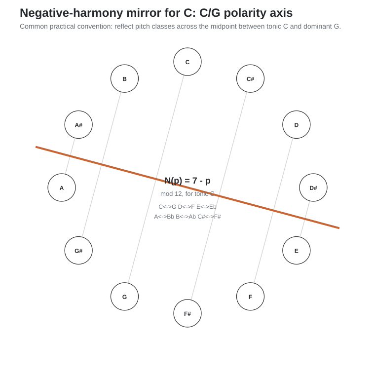
The resulting pitch-class pairs are:
| Positive | Negative | Positive | Negative |
|---|---|---|---|
| C | G | G | C |
| C#/Db | F#/Gb | F#/Gb | C#/Db |
| D | F | F | D |
| Eb | E | E | Eb |
| Ab | B | B | Ab |
| A | Bb | Bb | A |
Because reflection reverses interval direction, note order is usually normalized after the mapping so the result can be read as an ordinary chord or scale.
Reflect C major:
C E G → G Eb C → C Eb G = Cm
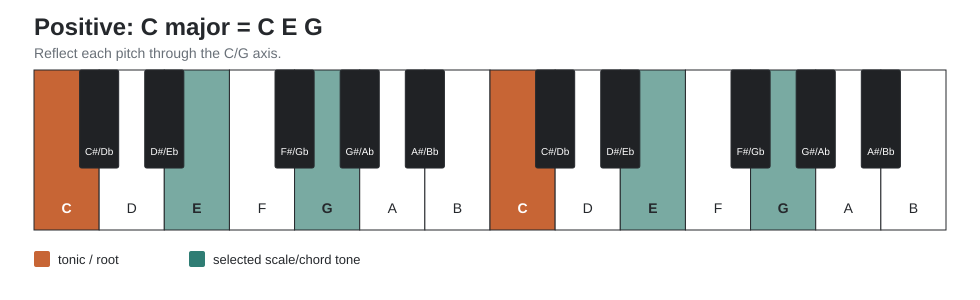
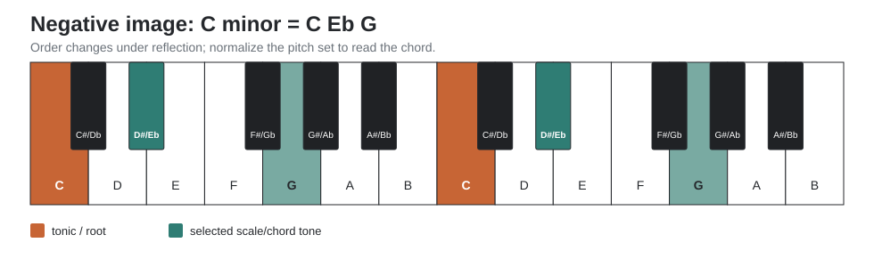
Reflecting the C-major scale gives the pitch collection of C natural minor:
C D E F G A B → G F Eb D C Bb Ab
Reordered from C:
C D Eb F G Ab Bb
This does not mean that major and natural minor are interchangeable; it means the reflection maps one collection to the other under this chosen axis.
| Positive harmony | Pitches | Negative image | Equivalent spelling |
|---|---|---|---|
| C major (I) | C E G | G Eb C | C minor (i) |
| D minor (ii) | D F A | F D Bb | Bb major (bVII) |
| E minor (iii) | E G B | Eb C Ab | Ab major (bVI) |
| F major (IV) | F A C | D Bb G | G minor (v) |
| G major (V) | G B D | C Ab F | F minor (iv) |
| A minor (vi) | A C E | Bb G Eb | Eb major (bIII) |
| B diminished (vii dim) | B D F | Ab F D | D diminished (ii dim) |
A particularly useful dominant example is:
G7 = G B D F → C Ab F D = D F Ab C = Dm7b5
The same pitch set can be heard or voiced as
Fm6 = F Ab C D. This is one reason the minor-subdominant
family appears naturally in negative-harmony demonstrations.
In C major, transform:
Dm7 → G7 → Cmaj7
Map every chord tone. Then voice the negative sequence on piano with the smallest possible motion. Compare the original and transformed bass motion, tendency tones, and final sense of arrival.
Write a four-bar melody in C major. Reflect every pitch through the C/G axis. Keep the rhythm unchanged. First play the mirrored melody over a C pedal; then harmonize it by ear. Only after that, compare the result with mechanically reflected chords.
Repeat the operation in Db, E, F#, and Ab. Do not memorize a C-only table. Use the general formula or construct the tonic/dominant axis in the new key.
This manual’s general theory material is standard Western tonal/modal theory. Product-layout descriptions were checked against current Ableton documentation in September 2026.
For Push and Note, this edition intentionally depicts Chromatic mode only. Push diagrams use the chromatic fourths geometry as the main comparison with guitar; Note diagrams use Chromatic/Fourths with In Key disabled. Scale tones may be visually emphasized, but no out-of-scale pitch is removed.
The Push, Note, piano, guitar, circle, voice-leading, and negative-harmony figures are original teaching diagrams, not screenshots of product interfaces.
The piano does not need to become isomorphic for transposition to become immediate.
Your invariant representation is:
function → pitch spelling → register → instrument geometry
A guitarist often encounters instrument geometry first because movable shapes can encode function while moving the whole sounding object through register. The aim is not to discard that motor knowledge, but to be able to move in both directions: from geometry back to function, spelling, and register, and from those abstractions into a new physical realization. A pianist faces the complementary problem: the fixed topography of white and black keys makes absolute pitch location explicit while the hand geometry changes across keys.
The black keys are therefore not exceptions to the system. They are the coordinate system that lets the non-isomorphic keyboard become navigable.